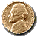

UK: BASKETBALL-EUROPEAN CHAMPION CLUBS' CUP RESULTS. 17:09 GMT
Date: Jan 26, 1995
LONDON, Jan 26 (Reuter) - Results of men's European Champion Clubs' Cup basketball semifinal series matches on Thursday:
Group B
In Istanbul: Efes Pilsen (Turkey) 77 Bayer Leverkusen (Germany) 66 (halftime 40-40)
Leading scorers:
Efes Pilsen - Ufuk Sarica (28), Volkan Aydin (22)
Bayern Leverkusen - Tom Garrick (18), Michael Koch (15)
Group B
In Limoges: Limoges CSP (France) 69 Barcelona (Spain) 57 (halftime 34-37)
Leading scorers:
Limoges - Michael Young (17)
Barcelona - Javier Fernandez (12)
Group A
In Madrid: Real Madrid (Spain) 76 Maccabi Tel Aviv (Israel) 64 (32-42)
Leading scorers:
Real Madrid - Arvidas Sabonis 23, Joe Arlauckas 16
Maccabi Tel Aviv - Doron Jamchi 16, Radislav Curcic 15
(c) Reuters Limited 1995. All rights reserved.
